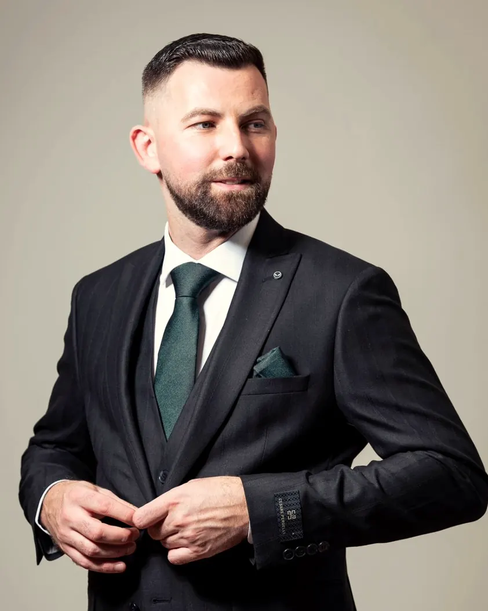

Pastry Chef · Mostar
Sve je počelo Grešnom tortom.

15 godina · 5 medalja · Akademija slastičarstva
Nemanja Petrović je pastry chef iz Mostara: 15 godina zanata, medalje iz Niša, Budve i Brača, svadbene torte i Akademija slastičarstva.
Instagram: @nemanja_petr